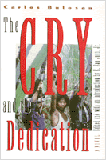

<body bgcolor="#FFFFFF" text="#000000" link="#0000FF" vlink="#CC0000" alink="#CC0000"><center><hr width="350" size="1" align="center" noshade>The adventures of seven Filipino guerrillas rebelling against U.S. domination<hr width="350" size="1" align="center" noshade><p><a href="https://cdcshoppingcart.uchicago.edu/Cart/ChicagoBook.aspx?ISBN=9781566392952&&PRESS=temple" target="_top">Buy this book!</a> | <a href="https://cdcshoppingcart.uchicago.edu/Cart/Cart.aspx?PRESS=temple" target="_top">View Cart</a> | <a href="https://cdcshoppingcart.uchicago.edu/Cart/Cart.aspx?PRESS=temple" target="_top">Check Out</a></p><p></p></center><!--none//--><h1>The Cry and the Dedication</h1>
<h3>Carlos Bulosan, edited by E. San Juan, Jr.</h3>
<P>cloth 1-56639-295-0 $84.50, May 95, <FONT COLOR=#990033>Out of Stock Unavailable</FONT>
<br>paper 1-56639-296-9 $42.95, May 95, <FONT COLOR=#990033>Available</FONT>
<BR> 344 pp
6x9
</P><BLOCKQUOTE><I><p>"[A] stunning tale of Filipino resistance fighters."</I>
<br>&#151<b><I>Asian Week</I></b><I></I></BLOCKQUOTE>
<p>This previously unpublished novel by the author of <I>America Is in the Heart</I> dramatizes the resourcefulness, cunning, and pain of the Filipino peasants' struggle against a heritage of colonization, first by Spain and later by the United States. Set during the political upheavals of the 1940s and 1950s, seven underground rebels&#151old and young, male and female, intellectual and peasant&#151set off across the Philippine countryside fueled by their outrage over continued U.S. domination. They combat both internal foes from their past memories and experiences and visible enemies who view their clandestine work as a destructive force of communism. As they confront danger and face physical and emotional sacrifices along the way, their sense of mission conveys a profound vision of democracy and self-determination.
<p>Bulosan's exceptional narrative, at once an allegorical and a psychological critique of the West's racism and delusion of supremacy, portrays an armed rebellion that can represent many Third World peoples. Literary and political, Bulosan's work embodies his personal dream of equality and freedom. When asked what impelled him to write, Bulosan replied, "To give literate voices to the voiceless...to translate the desires and aspirations of the whole Filipino people in the Philippines and abroad in terms relevant to contemporary history."
<BR>&nbsp;<h2>Excerpt</h2><P>Excerpt available at <a href="http://www.temple.edu/tempress">www.temple.edu/tempress</a></p>
<BR>&nbsp;<h2>Reviews</h2>
<p><I>"[T]he novel has a cumulative power. Editor San Juan...contributes a 36-page introduction that discusses Bulosan's life, writings, and philosophy as well as the historical background to the novel."</I>
<br>&#151<b><I>Library Journal</I></b>
<p><I>"The publication of Carlos Bulosan's posthumously discovered </I>The Cry and the Dedication<I>, along with the masterful Introduction by E. San Juan, Jr., is a signal event in the history of cultural radicalism.
<p>"Bulosan was previously recognized as a prophetic writer, an artisan of lush and evocative prose who felicitously blended traditional class struggle and anti-racist traditions of the 1930s with post-World War II themes of national liberation in the colonized world. But the appearance of this nearly 'lost' novel of guerrilla warfare in the Philippines extends his achievement in fresh and unexpected ways. With its Dantesque journey motif and Eliotic theme of sexual wounding, </I>The Cry and the Dedication<I> recalls works as diverse as Hemingway's </I>For Whom the Bell Tolls<I> and Kenneth Patchen's </I>The Journey of Albion Moonlight<I>, at the same time as it bears the marks of Philippine national culture.
<p>"Written against the descending night of the McCarthyite witch-hunt, </I>The Cry and the Dedication<I> is a haunting allegory of search, struggle and redemption. It is high testimony to the power of the revolutionary imagination when empowered by the exile's dream of personal return and liberation of the homeland."</I>
<br>&#151<b>Alan Wald</b>, University of Michigan
<BR>&nbsp;<h2>Contents</h2><P>
<p>Acknowledgments
<br>Introduction &#150 E. San Juan, Jr.
<br>The Cry and the Dedication
</P><BR>&nbsp;<H2>About the Author(s)</H2>
<P>Born in 1911 in the Philippines to a peasant family, <b>Carlos Bulosan</b> was one of the first wave of Filipino immigrants to come to the United States in the 1930s. After several arduous years as a farmworker in California, Bulosan became involved with radical intellectuals and started editing the workers' magazine <I>The New Tide</I>.
<p>While hospitalized for three years for tuberculosis and kidney problems, Bulosan began writing poetry and short stories. Despite having little formal education, he saw his talent for writing as a means to give a voice to Filipino struggles, both in the Philippines and in the United States. He went on to publish three volumes of poetry, a best-selling collection of stories, <I>The Laughter of My Father</I>, and <I>America Is in the Heart</I>, the much acclaimed chronicle based on his family's battle to overcome poverty, violence, and racism in the United States. <I>The Cry and the Dedication</I> carries on Bulosan's passionate, satirical style.</P>
<table><tr><td valign="top"><img src="/tempress/authors/1185_au2.gif" height="90" width="75"></td><td width="100%" valign="middle"><p><b>E. San Juan, Jr.</b> is Fellow of the Center for the Humanities and Visiting Professor of English, Wesleyan University, and Director of the Philippines Cultural Studies Center. He was recently chair of the Department of Comparative American Cultures, Washington University, and Professor of Ethnic Studies at Bowling Green State University, Ohio. He received the 1999 Centennial Award for Literature from the Philippines Cultural Center. His most recent books are <I>Beyond Postcolonial Theory</I>, <I>From Exile to Diaspora</I>, <I>After Postcolonialism</I>, and <I>Racism and Cultural Studies</I>. He has also edited a collection of Carlos Bulosan's writings entitled <I><A HREF="1184_reg.html" TARGET="_top">On Becoming Filipino: Selected Writings of Carlos Bulosan</A></I>.</P></td></tr></table>
<BR><H2>Subject Categories</H2>
<p><A HREF="/tempress/asian_amer.html" TARGET="_top">Asian American Studies</a>
<BR><A HREF="/tempress/literature.html" TARGET="_top">Literature and Drama</a>
<BR><A HREF="/tempress/asian.html" TARGET="_top">Asian Studies</a>
</p>
<BR><h2 class="inpageheading">In the series</H2>
<P><I><a href="http://www.temple.edu/tempress/asam_history.html" onMouseOver="window.status='Click for other books in this series!'; return true;" onMouseOut="window.status=''; return true;" target="_top">Asian American History and Culture</a></i>, edited by K. Scott Wong, Linda Trinh V�, and Cathy Schlund-Vials.
</p><p>Founded by Sucheng Chan in 1991, the <I>Asian American History and Culture</I>, series has sponsored innovative scholarship that has redefined, expanded, and advanced the field of Asian American studies while strengthening its links to related areas of scholarly inquiry and engaged critique. Like the field from which it emerged, the series remains rooted in the social sciences and humanities, encompassing multiple regions, formations, communities, and identities. Extending the vision of founding editor Sucheng Chan and emeriti editor Michael Omi and David Palumbo-Liu, series editors K. Scott Wong, Linda Trinh V�, and Cathy Schlund-Vials continue to develop a foundational collection that embodies a range of theoretical and methodological approaches to Asian American studies.</p>
<p align="center"><a href="https://cdcshoppingcart.uchicago.edu/Cart/ChicagoBook.aspx?ISBN=9781566392952&&PRESS=temple" target="_top">Buy this book!</a> | <a href="https://cdcshoppingcart.uchicago.edu/Cart/Cart.aspx?PRESS=temple" target="_top">View Cart</a> | <a href="https://cdcshoppingcart.uchicago.edu/Cart/Cart.aspx?PRESS=temple" target="_top">Check Out</a></p><p><font face="Arial" size="1"><a href="copyright.html" onMouseOver="window.status='Web Copyright Policy';return true;" onMouseOut="window.status=''" title="Web Copyright Policy">&copy;</a> 2015 <a href="http://www.temple.edu" target="new" onMouseOver="window.status='Link to Temple University home page';return true;" onMouseOut="window.status=''" title="Link to Temple University home page">Temple University</a>. All Rights Reserved. http://www.temple.edu/tempress/titles/1185_reg.html</font></p>